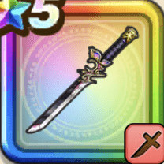

忍刀・朧
攻略班 7.5点 / アサシンアタックシャドーステップ鏡火炎舞突き秘剣・霞断ち朧影法師
くわしい特徴
【レベル別習得スキル】 Lv1【ニンジャ】すばやさ+10 Lv10アサシンアタック（消費MP：8）急所を狙い敵1体に威力160%の斬撃ダメージを与えたまに即死させる Lv15シャドーステップ（消費MP：5）華麗なステップでみかわし率を上げる Lv20鏡火炎舞突き（消費MP：31）敵1体に威力430%のメラ属性斬撃ダメージを与え、まれに自分が受けた呪文を1回だけ敵に跳ね返す光の壁を作り出す Lv30秘剣・霞断ち（消費MP：48）敵全体に威力410%のドルマ属性斬撃ダメージを与える Lv35怪人系へのダメージ+5% Lv40ゾンビ系へのダメージ+5% Lv45攻撃力+12 Lv50朧影法師（消費MP：9）戦闘開始時に自分の行動順が早いほど影縫い・影縛りの発動率が上がる効果を自分に付与する(効果2ターン) 【限界突破スキル】 1凸スキルの斬撃・体技ダメージ+7% 2凸スキルの斬撃・体技ダメージ+7% 3凸スキルの斬撃・体技ダメージ+7% 4凸スキルの斬撃・体技ダメージ+7%